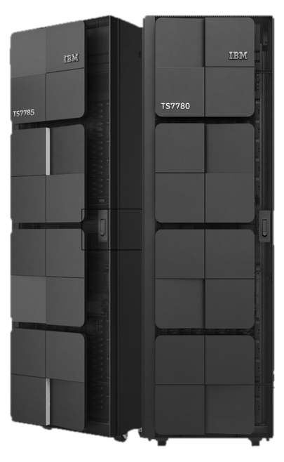
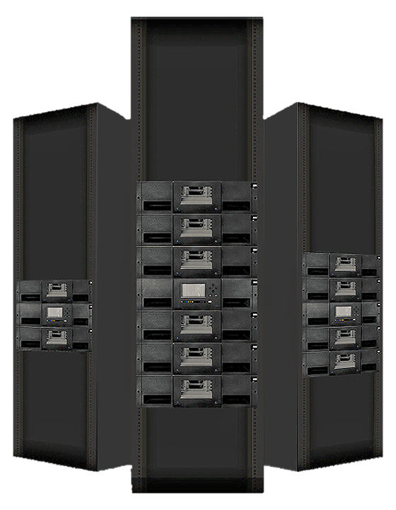
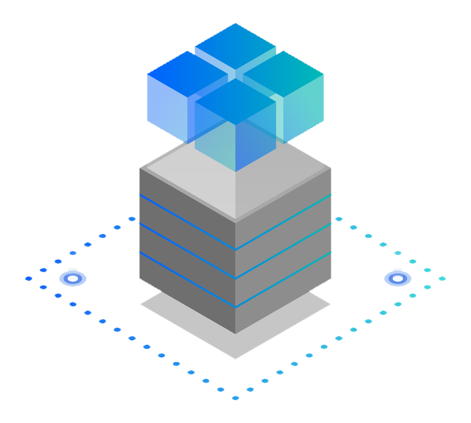

IBM TS2900 Tape Autoloader
Low-Profile Entry-Level Storage
Up To 162TB With LTO 9 · Supported On Open System Platforms · Cost-Effective Long-Term Retention

 TrimbleGNSS · Total Stations · Scanning
TrimbleGNSS · Total Stations · Scanning DJI EnterpriseDrones · LiDAR · Dock
DJI EnterpriseDrones · LiDAR · Dock Esri ArcGISGIS & SDI
Esri ArcGISGIS & SDI Spectra GeospatialGNSS & Robotic Stations
Spectra GeospatialGNSS & Robotic Stations Nikon PrecisionOptical Survey
Nikon PrecisionOptical Survey US RadarGround Penetrating Radar
US RadarGround Penetrating Radar Seafloor SystemsHydrographic Survey
Seafloor SystemsHydrographic Survey IBM Tape StorageEnterprise Data Archive
IBM Tape StorageEnterprise Data Archive XGRIDSHandheld SLAM LiDAR
XGRIDSHandheld SLAM LiDAR
KACO supplies and supports IBM tape storage infrastructure for long-term data retention, disaster recovery, and air-gapped cyber-resilient backup — protecting your organisation’s most critical data for decades, not just years.

From a single autoloader protecting a small office server to mainframe-scale virtual tape, we size and support the right IBM tape platform for your data retention requirements.
Low-Profile Entry-Level Storage
Up To 162TB With LTO 9 · Supported On Open System Platforms · Cost-Effective Long-Term Retention
High-Density, Easy To Manage
Up To 25.6PB With LTO 10 · Air-Gapped Cyber-Resilient Backup · Highly Scalable Architecture

Next-Generation Cloud Storage
Up To 926PB With LTO 10 · Integrated Fleet Management · High Storage Density
Virtual Tape For Mainframe Systems
Hybrid Cloud Integration · Cloud-Based Disaster Recovery · 8-Cluster Grid Encryption
Up To 50TB Native Capacity
150TB With Compression · High-Density Long-Term Retention · Cost-Effective Archive Infrastructure

Graphical LTFS Management Interface
Physical Air-Gap Protection · Optimised Archival Costs · Industry-Standard LTFS Format

Ransomware, hardware failure, and simple human error all threaten online data. We back every IBM tape deployment with sizing, installation, and ongoing infrastructure support.
Sizing and deployment of tape libraries and virtual tape systems as the last line of defence in your backup strategy.
Physically air-gapped tape cartridges that ransomware cannot reach — a critical layer beneath your online and cloud backups.
Tape storage installed as part of a wider IT infrastructure project — servers, structured cabling, and enterprise networks.
Our infrastructure engineers help you size the right IBM tape platform for your data volume, retention policy, and budget.